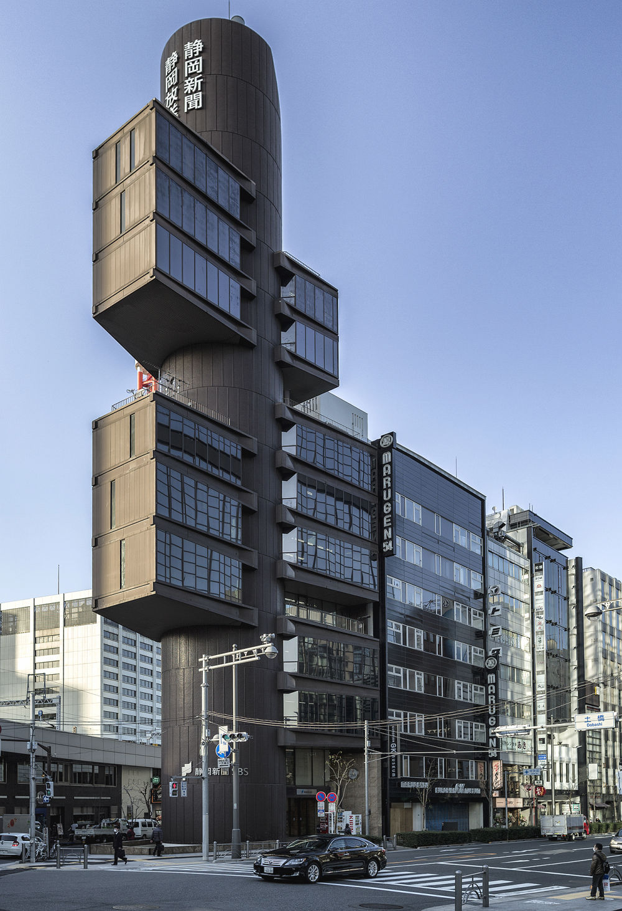
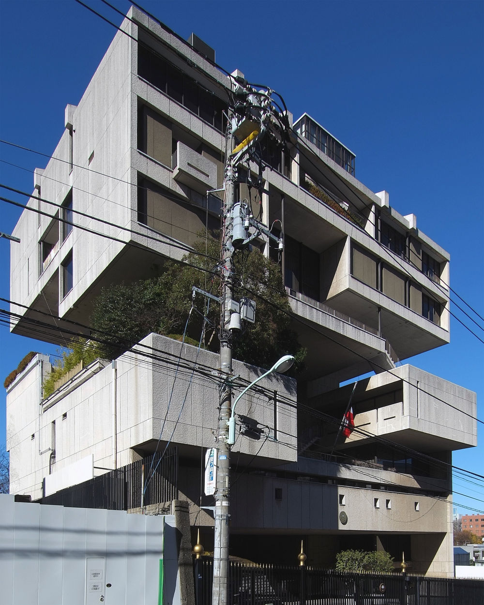

Metabolizm to styl architektoniczny stworzony przez japońską grupę Metabolism, złożoną z modernistycznych architektów i urbanistów, uczniów Kenzō Tange i działającą od 1959 do lat 70. XX wieku.
Nakagin Capsule Tower, K. Kurokawa
Budynek miał zmieniać się wraz z jego mieszkańcami. Architekci chcieli stworzyć ideał, wręcz utopijną konstrukcje, niezwykle praktyczną ale i estetyczną, godną na miarę przyszłości. Budynki powstają między innymi na zboczach górskich, unoszą się na wodzie, niekiedy też w powietrzu.
Nazwa odwołująca się do biologii nie została przypadkowo wybrana. Założeniem było miasto, w którym nieustannie się coś zmienia. Połączenie elementów trwałych szkieletu z nietrwałymi, poddającymi się przekształceniom. Była to swoista manifestacja modernizmu – ciężkiej, statycznej i prostej bryły.
Struktury proponowane przez metabolistów były zbudowane hierarchicznie i przypominały drzewa lub fraktale. Mają bardzo nietypowe kształty, rozumiem przez to okna -koła w wystających ściankach poza poziom reszty ścian. Ale każda budowla charakteryzuje się czymś innym, dlatego w metabolicznym stylu znajdziemy również budowle całe pokryte szkłem w nietypowym kształcie posiadające coś na podobieństwo stożka na czubku. Budowle mogą być owalne, pociągłe, takie jak widzą w przyszłości. Struktury w tym stylu przypominały nawiązania do natury (formy fraktalne lub budynki przypominające drzewo). Wielu obserwatorów opisuje ten styl jako nawiązujący do motywów filmów science-fiction.
Najpopularniejsi architekci metabolizmu:
Chcesz dowiedzieć się więcej o metabolizmie? Sprawdź Wikipedię, klikając tutaj.
Poznaj więcej budynków charakterystycznych dla metabolizmu:
|
 Shizuoka Press and Broadcasting Tower |
 Ambasada Kuwejtu w Japonii |